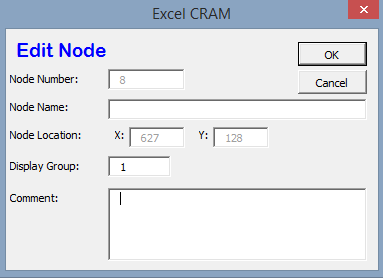

Model Details¶
Here we discuss some for the more complex features within CRAM.
Model Nodes¶
The following section defines the fields on the Edit Node dialog box.
- The Node Number is automatically assigned by Excel CRAM. Nodes can not be reused in the network.
- The Node Name is user-defined, and are most commonly left blank.
- If the Node Name is used, it must be an ASCII string (alphanumeric and/or special characters). A good example for a node name would be a stream gage name, location, or other geographic reference.
- The Node Location fields X and Y are not currently in use in the model. They are present only for legacy Excel CRAM models and should be ignored.
- The Display Group is set to 1 by default. The display group is an advanced feature that allows the user to hide network objects (nodes, links, etc.) in the network schematic. For more on display groups, see xxx.
- The Comment box allows the user to add any notes about the node that might be important to the design.
Model Links¶

The following section defines the fields on the Edit Link dialog box.
- The Link Number is automatically assigned by Excel CRAM. Link numbers can not be reused in the network.
- The Link Name is a user-defined ASCII string that povide a common name to describe the reach. It is recommended that the name be unique within the first 32 characters but this not required. The name should normally be less than 256 characters in length.
- The Offset field is not currently used in the model. It is present for legacy Excel CRAM models only and should be ignored.
- The From Node identifies the node at the upstream end of the link. Advanced Note: xxx - what is this??? The transfer or flow, of water from this node to the node indicated by the To Node would represent a positive number. A negative flow would indicate that water is traveling to the “From Node”.
- The To Node identifies the node at the downstream end of the link. The To Node is where the flow from this link enters and mixes with all other sources (links).
- Create Time Series Sheet/Go to Time Series Data button. This button has one of two labels on it. If the link being edited does not currently have any time series data associated with it, the button will read Create Time Series Sheet. Most links in a CRAM model DO NOT have time series data associated with them. Clicking on the button will create a formatted worksheet in the current scenario to hold timeseries data for the link. The user will need to populate the sheet with the appropriate data.
- The High field provides a space to specify a constant maximum capacity for the link. A value provided here will last for all minor time steps in a model run unless there is a Link Time Series Data sheet to override the value. A value of “Infinite” here indicates that the link does not have a capacity limit.
- The Low field provides a space to specify a constant minimum flow for the link. A value provided here will last for all minor time steps in a model run unless there is a Link Time Series Data Sheet in the current scenario with the Low parameter specified there. Advanced Note: If a negative value is used in this field, water will flow “backwards” through the link generating a negative priority for each unit of flow transferred. This should be used with caution, and it is recommended the priority value is set to zero.
- The Priority field provides a space to enter the priority to be assigned to that link.
- The Display Group is set to 1 by default. The display group is an advanced feature that allows the user to hide network objects (nodes, links, etc.) in the network schematic. For more on display groups, see xxx.
- The Step Sequence allows you to enter the state of the element (Open, Closed, Frozen) for each operation step. More information can be found in xxx. Advanced Note: The default value is O for open. Other values should only be used by advanced users.
- The Comment box allows the user to add any notes about the node that might be important to the design.
- Output To Worksheet provides a list of check boxes for Link parameters that can be written to the output worksheet when the model is run. xxx update the dialog box.